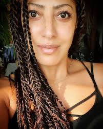

Privatleben
Jessica Wahls wuchs in Rodheim vor der Höhe auf, einem Ortsteil von Rosbach vor der Höhe. Ihr
afro-amerikanischer Vater stammt aus Washington, D. C., ihre Mutter ist Deutsche. Als Jugendliche jobbte
Wahls in der Werbefirma ihrer Mutter. Später begann sie eine Berufsausbildung zur Reiseverkehrskauffrau,
die sie wenige Wochen vor der Abschlussprüfung abbrach, um im Jahr 2000 Mitglied der Girlgroup No Angels zu
werden.
Von 2001 bis 2008 war Wahls mit dem Tänzer, Choreografen und Gastronom Sascha Dickreuter liiert, der auch
Vater ihrer im März 2003 geborenen Tochter ist. Die Patentante ihrer Tochter ist Sandy Mölling.
Im Frühjahr 2012 zog Wahls aufgrund ihrer Tätigkeit beim Mitteldeutschen Rundfunk mit ihrer Tochter nach
Leipzig.
Karriere
No Angels
→ Hauptartikel: No Angels
Jessica Wahls während der No Angels-Celebration-Tour (2022)
Im Jahr 2000 rief der Fernsehsender RTL II zum Casting für die deutsche Version der Show Popstars auf.
Gesucht wurden junge Frauen ab 18 Jahren für eine Girlgroup. Wahls sah den Aufruf im Fernsehen, und trotz
Erkältung und ohne genau zu wissen, worum es sich bei der Show handelte, ließ sie sich von ihrer Mutter und
einer Freundin überreden, am Casting in Frankfurt am Main teilzunehmen.[4] Sie sang in der ersten Runde
Saving All My Love for You von Whitney Houston und nahm nach weiteren Castingrunden als eine von 32
Teilnehmerinnen an einem Gesangs- und Tanzworkshop auf Mallorca teil. Wahls und weitere zehn Finalistinnen
kehrten nach Deutschland zurück. Dort erfuhren Wahls, Nadja Benaissa, Lucy Diakovska, Sandy Mölling und
Vanessa Petruo, dass sie als Siegerinnen der neuen Girlband No Angels angehören.
Im Sommer 2002 verkündete Wahls ihre Schwangerschaft und verließ die Band im Dezember des gleichen Jahres
für eine sechsmonatige Babypause. Nach der Geburt ihrer Tochter im März 2003 kehrte sie zugunsten ihres
Kindes und einer Karriere als Solointerpretin nicht mehr in die Band zurück. Im Frühjahr 2021 gab sie in
einem Interview bekannt, dass ihr Ausstieg die Entscheidung des damaligen Managements war.[5] Bevor sich die
No Angels Ende 2003 trennten, wurde das Best-Of-Album The Best of No Angels und die Abschiedssingle Reason
wieder gemeinsam mit Wahls veröffentlicht. Im Januar 2007 startete Wahls gemeinsam mit drei weiteren
Gründungsmitgliedern mit dem Album Destiny ein Comeback. Nachdem die No Angels nach dem Ausstieg von
Bandmitglied Benaissa ab 2010 nur noch als Trio bestanden, konzentrierten sich die verbliebenen
Bandmitglieder wieder verstärkt auf ihre Solokarrieren. Im Juni 2014 wurde die Trennung der Band verkündet.
Zum 20-jährigen Bandjubiläum veröffentlichten die No Angels im Juni 2021 ihr neues Album 20.[6]
Mit über fünf Millionen verkauften Tonträgern sind die No Angels bis heute die meistverkaufte deutsche
Girlgroup aller Zeiten und die erfolgreichste Girlgroup Kontinentaleuropas.[7][8] Wahls schrieb an den Songs
Shield Against My Sorrow, Up Against the Wall, Young Love und One Life mit.
Solosängerin
Jessica Wahls (2008)
Nach der Babypause und dem Ausstieg bei den No Angels startete Wahls im September 2003 ihre Solokarriere als
Jess mit dem Song Ten Steps Back. Dieser wurde im Juli 2003 in Frankfurt eingesungen.[9] Ihren ersten
Auftritt als Solosängerin hatte Wahls bei der Musikshow The Dome 27 von RTL II, bei der sie Ten Steps Back
in einer Version mit einem Dancebreak und zehn Backgroundtänzern vorstellte. Das Erscheinen der Single fand
zeitgleich mit der Ankündigung der Trennung der No Angels statt, die die Veröffentlichung von Ten Steps Back
überschattete.[10] Die Single erreichte Platz 41 in den Singlecharts in Deutschland und hielt sich dort acht
Wochen. In Österreich erreichte der Song Platz 54. Im November 2003 lehrte Wahls in der zweiten Staffel der
KiKA-Show Stardance in vier Shows Kindern die Choreographie zu Ten Steps Back.[11]
Im November des gleichen Jahres war Wahls Teil der TV Allstars, einem Zusammenschluss von Bands und Sängern
verschiedener Castingshows. Gemeinsam veröffentlichten sie ein Cover des Band-Aid-Songs Do They Know It’s
Christmas?. Die Single erreichte Platz drei in den deutschen, Platz 26 in den österreichischen und Platz 51
in den Schweizer Singlecharts und wurde in Deutschland mit einer Goldenen Schallplatte für über 250.000
verkaufte Exemplare ausgezeichnet. Für das Album The Ultimate Christmas Album der TV Allstars nahm Wahls
eine eigene Version des Songs Winter Wonderland auf. Das Album erreichte Platz 3 in Deutschland, Platz 28 in
Österreich und Platz 32 in der Schweiz und wurde in Deutschland ebenfalls mit einer Goldenen Schallplatte
ausgezeichnet.
Wahls' zweite Single Don’t Get Me Started, geschrieben von US-Songwriter Peter Quint[12], wurde im August
2004 veröffentlicht. Die Single-CD enthält die B-Seite Move It On, die von Wahls mitgeschrieben wurde. Don’t
Get Me Started erreichte Platz 51 in den deutschen Singlecharts und hielt sich dort vier Wochen. Im
September des gleichen Jahres erschien auf dem Album Lovers Forever von Marshall & Alexander der Song When
We Kiss gemeinsam mit Wahls. Für das Jahr 2004 wurde ein Soloalbum angekündigt, für das Wahls seit Herbst
2003 Songs schrieb und aufnahm.[13] Einige dieser Songs, darunter u. a. Crime und No More, stellte Wahls bei
Auftritten vor. Das Album wurde jedoch nicht veröffentlicht.
Im März 2005 wurde die erste deutschsprachige Single von Wahls, Du bist wie ich, bei Polydor veröffentlicht.
Die B-Seite Million Miles wurde von Wahls mitgeschrieben. Du bist wie ich war von 2004 bis 2009 Titelmusik
der Fernsehsendung KiKA LIVE. Der Song erreichte Platz 78 in den deutschen Singlecharts. Im November 2005
erschien unter ihrem vollständigen Namen Jessica Wahls die Single Bedingungslos mit der B-Seite Ich flieg
davon bei der Plattenfirma Maseco Media. Beide Songs wurden von Wahls mitgeschrieben. Die Single platzierte
sich auf Platz 92 der Singlecharts in Deutschland. Im selben Jahr sang Wahls zur Unterstützung eines
Projekts der Kinderhilfsinitiative Heinz-der-Stier-Stiftung von Heinz Hönig den Song Du bist nicht allein
ein. Für das Jahr 2006 wurde ein Studioalbum angekündigt, für das Wahls deutschsprachige Lieder schrieb und
einsang.[14] Eine kommerzielle Veröffentlichung des Albums wurde aufgrund des Insolvenzverfahrens ihrer
Plattenfirma Maseco Media nicht realisiert.[15] Einige Songs stellte Wahls bei Auftritten vor und
veröffentlichte sie später auf ihrem Myspace-Profil, darunter auch die Titel Ich seh dein Bild, Wenn der
Vorhang fällt und Wach auf.
Im Juni 2011 veröffentlichte Wahls den Song Reach Out Your Hand auf dem Sampler We Care der
Hilfsorganisation CARE. Im Januar 2014 veröffentlichte der Rapper Young CRhyme die Single The Love Is so Far
Away gemeinsam mit Wahls, die den Refrain beisteuerte. 2016 wurde der Song How to Dance des Rappers The
Breed gemeinsam mit Wahls veröffentlicht. 2017 erschien der Benefizsong Nichts ist mehr wie früher, den
Wahls gemeinsam mit Volker Schlag dem Boxer Eduard Gutknecht widmete, der bei einem Boxkampf
verunglückte. Im selben Jahr war sie als Gast im Song Girls Party von The Breed zu hören. 2021
erschien für den Verein The Rising Lions der gleichnamige Song gemeinsam mit Alex Silva. Von 2012 bis 2019
und 2022 trat Wahls jährlich im Rahmen der MDR Jump Weihnachtsmarkt-Tour auf Weihnachtsmärkten in Sachsen,
Sachsen-Anhalt und Thüringen auf. In ihrem Bühnenprogramm präsentierte sie internationale
Weihnachtsklassiker. Die Tour fand mit wechselnden Gästen statt und wurde jährlich von bis zu 25.000
Menschen besucht.
Ende 2022 gab Wahls in einem Interview bekannt, an der Weiterentwicklung ihrer bereits aufgenommenen,
deutschsprachigen Songs arbeiten zu wollen. Dafür habe sie Kontakt zu möglichen Musikproduzenten
aufgenommen.
Moderationen
Fernsehen und Live-Veranstaltungen
Seit 2005 arbeitet Wahls als Moderatorin im Fernsehen und bei Live-Veranstaltungen. 2005 moderierte sie
vertretungsweise die Show 17 auf VIVA. Moderationen für MTV folgten. Bei 9Live war sie im selben Jahr als
freibeschäftigte Moderatorin tätig[20] und moderierte die Shows 9Live Quizfabrik, Quizzo und 9Live
Reiseclub. 2008 moderierte sie zwei Staffeln der wöchentlichen Show EnterTierment auf dem TV-Sender Tier TV.
Sie moderiert seit 2015 die Veranstaltung Leipziger Viertelfinale! des RB Leipzig[21] und ist auch als
Co-Stadionsprecherin aktiv.[22] Seit 2017[23][24] moderiert sie mit Kollegen beim Dresdner Opernball auf dem
Theaterplatz vor der Oper in Dresden. Im Jahr 2018 moderierte sie eine Veranstaltung für Porsche.[25]
Radio
Von Februar bis November 2011 moderierte Wahls montags bis freitags ihre eigene Radioshow, die
Nachmittagssendung @work, sowie die Sendung Brandneu bei Radio Energy in Frankfurt am Main. Seit März 2012
ist Wahls Gesicht und Expertin der Musikredaktion bei MDR Jump in Halle (Saale). Sie ist u. a. zuständig für
die Musikplanung des Senders, erstellt im Rahmen des Programms Hit-Versteher Radiobeiträge mit
Hintergrundinformationen zu Songs, singt Jingles ein und führt Interviews mit Künstlern.[26]